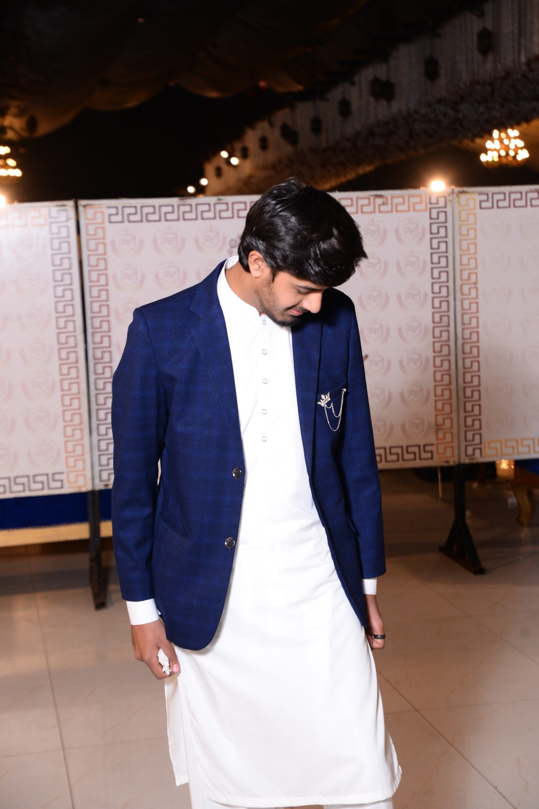

Hi, I'm Saad Ali
Computer Science Student | Future AI Engineer
Welcome to my portfolio! I am passionate about building modern software, creating responsive web applications, and exploring Artificial Intelligence. Every day I work on improving my skills through real-world projects and continuous learning.
Contact MeAbout Me
Hello! My name is Saad Ali, and I am a 20-year-old Bachelor of Science in Computer Science (BSCS) student at the University of Gujrat. My passion for technology began with a simple curiosity about how software works, and over time it has evolved into a strong desire to become a professional Artificial Intelligence Engineer.
Throughout my academic journey, I have gained experience in C, C++, Java, JavaScript, HTML, CSS, WordPress, and Backend Development. I enjoy creating modern, responsive websites and exploring new technologies that challenge my problem-solving skills.
Outside of academics, I spend much of my time learning independently through online resources, building personal projects, and improving my coding practices. I strongly believe that consistency and continuous learning are the keys to becoming an excellent software engineer.
Every project I complete teaches me something valuable. Whether it's designing a website, developing backend logic, or experimenting with new frameworks, I always strive to improve both my technical skills and creativity.
My Journey
Beginning
Started with C and C++, learning programming fundamentals, logical thinking, and problem solving.
Web Development
Expanded into HTML, CSS, JavaScript, and WordPress to build modern responsive websites.
Today
Working on full-stack development, backend technologies, and preparing for Artificial Intelligence.